СОЗДАНИЕ КАФЕДРЫ ПОЧВОВЕДЕНИЯ В РОСТОВСКОМ УНИВЕРСИТЕТЕ
Предыстория возникновения кафедры почвоведения в Ростовском университете тесно связана с вышеописанной
социально-политической обстановкой России. В 1915 году Императорский Варшавский университет, открытый 12
октября 1869 г., в связи с начавшейся войной, был эвакуирован в г. Москву, а в сентябре этого же года – в
г. Ростов-на-Дону. Первоначально он именовался как Варшавский, с мая 1917 года был переименован в Донской
университет, несколько позже (январь 1925 г.) – в Северо-Кавказский университет. Название Ростовский
государственный университет за ним закрепилось лишь с 1934 года.
Открытию кафедры почвоведения в Ростовском университете в значительной степени способствовало
правительственное постановление 1922 года. Этим постановлением при Московском университете было учреждено
два научно-исследовательских института, в том числе – Институт почвоведения. Это положило начало
формированию широкой сети учебно-научных центров по почвоведению в России. Был принят также ряд крупных
программ преобразования сельского хозяйства: организация коллективных хозяйств, проектирование крупные
водо- и лесомелиоративных работ. Все это послужило толчком к появлению заказов на выполнение большого
объема почвенно-картографических работ. Успешное решение поставленных задач требовало подготовки
высококвалифицированных кадров-почвоведов во всех регионах России. Создались благоприятные научные и
социально-экономические условия для открытия кафедры почвоведения и в Ростовском университете.
УЧРЕЖДЕНИЕ И СТАНОВЛЕНИЕ КАФЕДРЫ
ПОЧВОВЕДЕНИЯ (1935—1940 гг.)
Организационные акты и структурный статус кафедры
Для организации кафедры почвоведения при Ростовском университете в 1934 году был приглашен ученый с
мировым именем, опытный педагог, профессор Сергей Александрович Захаров – ученик и последователь В.В.
Докучаева. К тому времени на счету С.А. Захарова уже были организация кафедры почвоведения в
Константиновском Межевом институте, участие в создании Политехнического института в Тбилиси и Кубанского
политехнического института в г. Краснодаре (ныне Кубанский аграрный университет). Немаловажно и то, что к
моменту открытия кафедры, основным учебником университетского курса «Почвоведение» в России был учебник
Сергея Александровича, вышедший в 1927 и переизданный в 1931 году.
Талантливый организатор науки С.А. Захаров сумел подобрать в педагогический коллектив кафедры ученых с
большим творческим потенциалом, что предопределило авторитет кафедры, ее важную роль в развитии
отечественного почвоведения, формировании на Северном Кавказе школы почвоведов-докучаевцев.
Официально открытие кафедры почвоведения в Ростовском университете состоялось в сентябре 1935 года, именно
в этом учебном году в нашем университете был произведен первый набор студентов на специальность
«почвоведение». Первоначально кафедра входила в состав геолого-почвенно-географического факультета.
Несколько позже факультет был преобразован в геолого-почвенный, а с 1949 года кафедра почвоведения была
переведена на биологический факультет, который и до настоящего времени именуется биолого-почвенным.
Организационные трудности, связанные с созданием новой кафедры, как видно, осложнялись еще и структурной
реорганизацией факультетов.
Сергей Александрович кроме огромной работы по формированию кафедры почти беспрерывно выполнял обязанности
декана геолого-почвенного факультете или проректора университета по учебной работе. Его отличало бережное
и тактичное отношение к сотрудникам и своим ученикам, которых он заражал неутомимой систематической
работоспособностью. Этим культивировалась доброжелательность и соревновательность на кафедре.
В первые же годы своего существования кафедра была хорошо оборудована. Были организованы кабинет генезиса,
географии и картография почв, лаборатория для научно-исследовательской работы сотрудников кафедры,
кабинет-лаборатория заведующего кафедрой, почвенный музей, аудитория, специализированная для чтения лекций
по почвоведению.
Кафедра имела земельные участки на территории Азово-Донской биологической станции и Ботанического сада
РГУ. Здесь проводились наблюдения за динамикой почвенных процессов и учебная практика студентов. С 1936
года на базе кафедры было открыто почвенное отделение.
Сергей Александрович Захаров (1878—1949), основатель и заведующий кафедрой с 1935 по 1949 гг. Доктор
почвенных и сельскохозяйственных наук, ученик В.В. Докучаева.
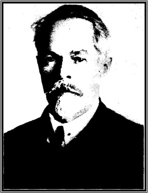
С.А.Захаров
Им опубликовано свыше 250 работ, а с учетом рефератов – более 500. Награжден Золотой медалью имени П.П.
Семенова-Тянь-Шанского, Золотой медалью имени В.В. Докучаева, орденом «Знак почета» (1944), медалью «За
доблестный труд в Великой Отечественной войне I94I—I945 гг.» и Почетной грамотой Президиума Верховного
Совета Киргизской ССР в 1944 году.
В 1934 г. С.А. Захаров получает приглашение руководства Ростовского университета организовать на
геологическом факультете кафедру почвоведения. В короткий срок вместе с Ф.Я. Гаврилюком – своим
ассистентом, молодым ученым, только что защитившим кандидатскую диссертацию после окончания аспирантуры
Московского университета, он проводит необходимые работы. В следующем году официально открывается
почвенное отделение, факультет переименовывают в геолого-почвенный, а С.А. Захаров становится его деканом
и заведующим кафедрой почвоведения. На этой должности он оставался до самой своей кончины в 1949 г.
Разрабатывая учение о факторах почвообразования, С.А. Захаров особо подчеркивает роль антропогенного
фактора. В то время это было новым словом в почвоведении. Главными антропогенными явлениями –
почвообразователями – профессор Захаров считал орошение и заиление почв, осушение болот, лесонасаждение,
обработку и удобрение почв, создание искусственных почв. "С деятельностью человека в роли
почвообразователя все более и более приходится считаться, по мере того как увеличивается численность и
плотность населения земного шара", – писал Сергей Александрович в своем учебнике «Курс почвоведения».
Особая заслуга С.А. Захарова – разработка классификации и систематики почв. В
предложенной им классификации, основной классификационной единицей остаются почвенные типы, под которыми
он подразумевал группы почв, различающиеся по характеру почвообразования (что соответствует современному
пониманию этого понятия). Далее типы делятся, по Захарову, на подтипы – по степени выраженности
основного процесса почвообразования, подтипы – на группы (по гранулометрическому составу, сейчас это
разновидности), а группы – на разности (по характеру материнских пород).
В географических исследованиях главный вклад С.А. Захарова – раскрытие на
примере Кавказа и Средней Азии закономерностей вертикальной зональности почв. Им было показано, что
поясность почвенного покрова изменяется в связи с положением горной страны. В зависимости от этого
находится как состав почвенных зон, так и изменение их высотного положения. Ученый подчеркивал, что
вертикальные почвенные зоны представляют собой не простое повторение широтных зон, а только аналогичны
им.
В разные годы С.А Захаров обосновывает в качестве самостоятельных самобытных
почвенных типов выделение таких почв, как коричневые (серо-коричневые), горно-луговые, слитые горные
черноземы, карбонатные аллювиальные, темноцветные лесные на карбонатных продуктах базальтовых лав.
В 1929 г. С.А. Захарову за совокупность работ по географии почв присуждается
"Золотая медаль Географического общества СССР".
Предвоенные годы работы в Ростове-на-Дону ознаменовались значительным
развитием картографических исследований. С.А. Захаров стремился создать фундаментальный научный труд по
почвам Нижнего Дона. В период с 1936 по 1940 год под его руководством, редакторской правкой, личным
написанием отдельных больших разделов была подготовлена и издана в четырех книгах коллективная
монография "Почвы Ростовской области и их агрономическая характеристика" (50 п. л.) и почвенная карта
области в масштабе 1: 500 000.
В 1939 г. была опубликована еще одна работа С.А. Захарова, посвя-щенная
обобщению знаний о почвах нашего региона – "Почвы Предкавказья". Это большой раздел трехтомной монографии
"Почвы СССР", подготовленной по инициативе Л.И. Прасолова Почвенным институтом им. В.В. Докучаева.
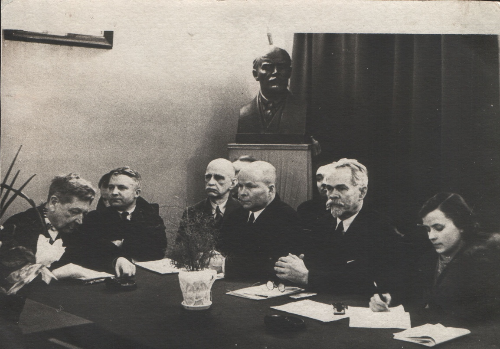
Заседание ученого совета Почвенного института Академии Наук СССР – 1940 год, слева направо:
академик Б.Б. Полынов, профессор Н.А. Качинский, академик А.Н. Соколовский, академик И.В. Тюрин,
профессор С.А.Захаров
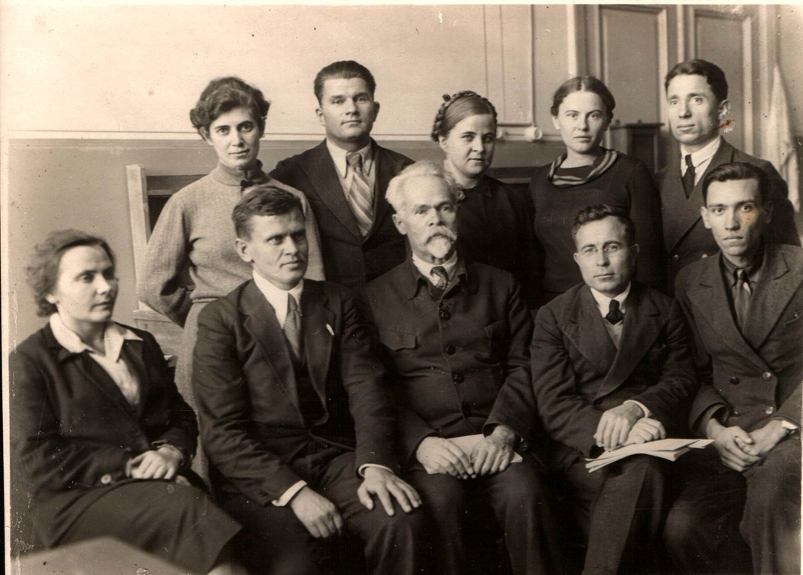
Полный состав кафедры почвоведения РГУ (декабрь1941): сидят (слева направо): ассистент
Королева Ольга Николаевна, доцент Гаврилюк Федор Яковлевич, профессор Захаров Сергей Александрович (зав.
кафедрой), ассистент Карнаухов Борис Гордеевич, ассистент Куценко Евгений Михайлович; стоят (слева
направо): аспирант Новикова Анна Васильевна, аспирант Солдатов Андрей Сысоевич, лаборант Могилина
Валентина Михайловна, аспирант Литвер Александра Викторовна, ст. лаборант Кудрявцев Михаил Николаевич.
Научный профиль кафедры. Школа С. А. Захарова
в университете
Научный профиль кафедры во многом был предопределен мировоззрением С.А. Захарова. Круг его научных
интересов в той или иной мере затрагивал почти все разделы почвоведения. С некоторой условностью
теоретические работы С.А. Захарова можно систематизировать в следующие группы:
Общегенетические;
Работы по классификации почв;
Географические и картографические;
Исследование свойств почв и их генетических горизонтов;
Разработка вопросов динамики и эволюции почв;
Вопросы палеопочвоведению и др.
Труды прикладного характера также довольно четко разделяются на несколько направлений:
Работы по районированию территорий;
Изучение почв виноградников, чайных плантаций, луговых угодий;
Изучение плодородия почв и действия удобрений;
Работы военно-оборонного характера и др.
Сергей Александрович Захаров постоянно стремился к внедрению теоретических знаний о почвах в практику народного хозяйства. Здесь есть также ряд новаторских идей. Изучая почвы виноградников, он счел необходимым ввести в программу обучения студентов специальный курс «Ампелопедология». Он считал также необходимым иметь при кафедрах почвоведения полевые почвенные опытные станции (опытные поля). В Ростовском университете такая станция была организована в 1946 г. Полная программа работы этой станции изложена в журнале «Почвоведение» . В ее задачу входила разработки методов исследования и углубленного изучения для почв Нижнего Дона и Северного Кавказа следующих проблем: а) генезис почв; б) динамика почв; в) плодородие почв; г) создание культурных почв (то, что в настоящее время именуется рекультивацией и мелиорацией почв); д) эрозия почв и борьба с нею; е) другие почвенные проблемы, выдвигаемые народным хозяйством.
ПРЕДВОЕННЫЙ, ВОЕННЫЙ И ПОСЛЕВОЕННЫЙ ПЕРИОД
РАЗВИТИЯ ПОЧВОВЕДЕНИЯ В УНИВЕРСИТЕТЕ (I940—I949)
Эвакуация кафедры и ее функционирование в годы войны
С самого начала Великой Отечественной войны Сергей Александрович Захаров всю силу своего ума и опыта активизировал в направлении оказания помощи фронту и тылу. Он пишет целый ряд докладных записок в штаб Северо-Кавказского фронта: "О проходимости местных почв", «О значении времени вскрытия рек и оттаивания почв для военных операций», «О стратегических особенностях театра военных действий с почвенно-географической точки зрения», «О свойствах почв при их минировании» и др. По его же инициативе в программу геолого-почвенного факультета включаются специальные разделы, имеющие отношение к выполнению военно-инженерных работ. Но фронт неумолимо приближался к воротам Кавказа – городу Ростову-на-Дону.
В 1942 году, 8 июля, прямыми бомбовыми попаданиями было уничтожено все оборудование кафедры. В июле же кафедра почвоведения совместно с коллективом университета эвакуируется первоначально в Махачкалу, а в ноябре 1942 года прибывает в город Ош Киргизской ССР. Здесь вместе с С.А.Захаровым на кафедре работали Б.Г. Карнаухов и В.П. Мирошников (преподаватель пединститута).
С 15 ноября 1942 года возобновились занятия почти на всех факультетах университета. Знаток горных почв Кавказа, Сергей Александрович и в Киргизии попадает в свою стихию. Огромные горные цепи Памиро-Тянь-Шаньской системы были мало исследованы в почвенном отношении. Он организует почвенные экспедиции по изучению почв и растительности хребтов Киргизии, изучает пустынные почвы, собирает почвенные коллекции, выступает на научных конференциях. Для научных и учебных целей была собрана большая коллекция. Некоторые из этих экспонатов были доставлены позже в Ростов-на-Дону и в настоящее время представлены в музее почвоведения имени проф. С.А. Захарова.
В конце 1944 года Ростовский государственный университет возвращается в родной город. Приходится все начинать сначала. Ростовская квартира семьи Захаровых разграблена; все имущество, в том числе картины отца, уникальная почвенная библиотека, рукописи, черновые наброски давно задуманной монографии "Почвы Кавказа", множество карт, полевых дневников безвозвратно утеряны. Как уже упоминалось, уничтожена во время бомбежек кафедра почвоведения. Но самая тяжелая, невосполнимая потеря – гибель на фронте обоих сыновей.
Послевоенный период развития почвоведения в университете (1945—1949 гг.)
В исключительно тяжелых условиях Сергею Александровичу пришлось восстанавливать кафедру после войны. Лишь благодаря огромному авторитету и работоспособности С.А. Захарова, кафедра сравнительно быстро вошла в нормальный рабочий ритм. Помогли этому и другие университеты, в частности, некоторое оборудование, мебель и фондовая литература поступили из Московского университета. В результате в короткое время были восстановлены лаборатории, почвенный музей, собраны новые коллекции.
Наряду с восстановлением кафедры, в 1946 году С.А. Захарову удалось осуществить свою давнюю мечту – была учреждена и начала функционировать Полевая почвенная опытная станция. В послевоенный период С.А. Захаров ставил также вопрос об организации на Северном Кавказе Агро-почвенного научно-исследовательского института. В программу его работы закладывался мониторинг (слежение) за изменением почв в результате различной интенсивности антропогенной нагрузки на них: воздействия сельхозмашин, мелиоративных мероприятий, влияние видов обработки на состав и свойства почв, исследование микробиологии и биологии почв и т.д. По своей сути это прототип впоследствии организованных зональных НИИ сельского хозяйства.
ПРЕЕМСТВЕННОСТЬ И ДАЛЬНЕЙШЕЕ РАЗВИТИЕ ИДЕЙ С.А. ЗАХАРОВА НА КАФЕДРЕ (1951—1995 гг.)
В 1951 году на должность заведующего кафедрой почвоведения и агрономии Ростовского университета из Дагестанского сельскохозяйственного института был приглашен профессор Василько Васильевич Акимцев (1893—1967).
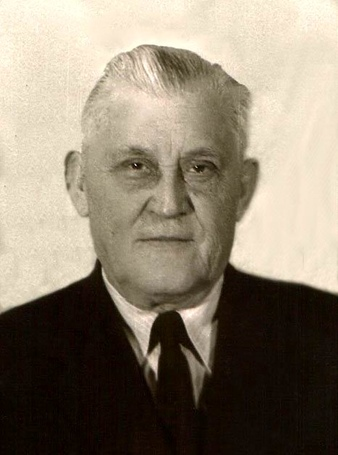
Василько Васильевич Акимцев – ученый, педагог и организатор проблемной лаборатории по изучению микроэлементов
в почвах и растениях
В.В. Акимцев прошел большой и сложный путь от препаратора кафедры почвоведения Тифлисского политехнического института до крупного ученого-почвоведа и агрохимика. При его непосредственном участии создавались и оборудовались кафедры, лаборатории, учебные хозяйства в ряде высших учебных заведений Северного Кавказе и Украины начиная с 1924 года.
Профессор В.В. Акимцев описал формирование желтоземов на Ленкоранской низменности Азербайджана. Открыл переходные формы между желтоземами и подзолистыми почвами – оподзоленные желтоземы. Изучал почвенный покров Талышских гор, Гянджинского района Азербайджана, почвы вдоль Армянской ветки Закавказской железной дороги, почвы Малой Чечни, почвы Анапского района Краснодарского края.
Развивая положение С.A. Захарова о «миграции почв» и об «инверсии почвенных зон», В.В. Акимцев сформулировал новый географический закон – закон вертикальной микрозональности почв. Это послужило основой к выделению в почвенном покрове горных стран почвенных провинций (аналогично почвенным провинциям равнин Л.И. Прасолова).
Изучая генезис серо-каштановых почв, В.В. Акимцев выдвинул важное положение о вторичном их осолодении.
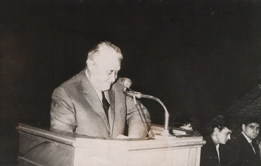
С докладом на конференции выступает профессор В.В. Акимцев
Профессор В.В. Акимцев одним из первых среди почвоведов заинтересовался связью, существующей между почвами и болезнями. Именно В.В. Акимцев обратил внимание на роль почв в распространении заболеваний, причем не только имеющих эндемическую природу, но и таких как рак, некоторые инфекционные болезни. Здоровье человека в значительной степени определятся той средой, в которой он вынужден жить, и, как оказалось, почве в этом вопросе принадлежит немаловажная роль. Ряд заболеваний, получивших название «эндемические болезни», связан с определенными почвенными условиями: избытком или недостатком химических элементов, нарушением их соотношения. Наиболее широко известными примерами из этой области являются заболевания щитовидной железы (зоб и базедова болезнь), поражения зубной эмали (кариес и флюороз), но их список очень велик и продолжает расширяться.
Одновременно с этим циклом работ в 1957 году Василько Васильевич разрабатывает план изучения микроэлементов в почвах. Это научное направление определило на многие годы тематику исследований кафедры. Была создана специальная спектральная лаборатория. Ею заведовал старший научный сотрудник Сергей Николаевич Голубев. В лаборатории работала также младший научный сотрудник Наталья Федоровна Аподиакос. В решение этой проблемы включились многие сотрудники кафедры почвоведения и агропочвенного отдела НИИ биологии Ростовского университета.
За выдающиеся успехи в области науки и подготовки кадров профессор Василько Васильевич Акимцев в 1961 году был удостоен высшей правительственной награды – ордена Ленина. В 1963 году научная общественность отмечала 70-летие Василько Васильевича и 40-летие его научной, педагогической и общественной деятельности. Свыше 350 приветственных адресов, писем и телеграмм пришло в его адрес со всех концов страны.
Заметный период развития почвоведения в университете связан с именем известного ученого в области почвоведения, заслуженного деятеля науки Российской Федерации, профессора Федора Яковлевича Гаврилюка.
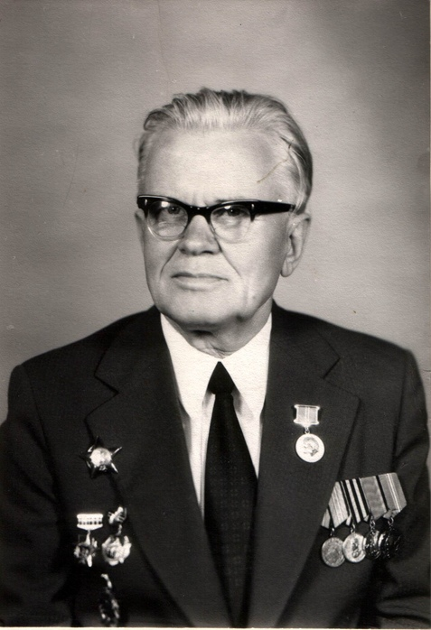
Федор Яковлевич Гаврилюк – известный ученый, педагог,
руководитель разработки проблемы генезиса, географии и оценки земель Нижнего Дона и Северного Кавказа
Ф.Я. Гаврилюк родился 19 августа 1907 года в Винницкой области. В 1931 году окончил Каменец-Подольский сельскохозяйственный институт и поступил в аспирантуру МГУ им. М.В. Ломоносова.
Федор Яковлевич был заведующим кафедрой почвоведения и агрохимии с 1949 по 1951 год. Затем с 1953 по 1960 год он работал деканом биолого-почвенного факультета РГУ, а в 1966 году вновь вернулся к руководству кафедрой и оставался на этом посту до 1987 года. А началась его деятельность в Ростовском государственном университете в 1935 году: молодой кандидат наук Ф.Я. Гаврилюк был направлен в Ростовский университет, где профессор С.А. 3ахаров организовывал кафедру почвоведения. Сергей Александрович обратился к профессору МГУ В.В. Геммерлингу – первому заведующему первой университетской кафедры почвоведения – с просьбой помочь с подбором преподавательских кадров для новой кафедры почвоведения. Профессор Геммерлинг предложил только что защитившемуся кандидату наук Ф.Я Гаврилюку принять участие в этом знаковом событии, тем более что научная работа молодого ученого была посвящена генезису структуры черноземных почв. С тех пор жизнь и деятельность Федора Яковлевича неразрывно была связана с этой кафедрой, с развитием почвоведения на Дону и Северном Кавказе.
Научные интересы Федора Яковлевича были продиктованы необходимостью решения крупной проблемы: разработкой научных основ рационального использования и повышения производительности почв Северного Кавказа. Эта тематика определяла научный профиль кафедры и входила в план развития народного хозяйства. Значительный вклад профессор Ф.Я. Гаврилюк внес в решение вопросов генезиса, географии, классификации и диагностики черноземов Северного Кавказа. Его перу принадлежит известная работа: «Черноземы Западного Предкавказья» (1955). Появление этого труда, а также последующие исследования по этой проблеме выдвинули Ф.Я. Гаврилюка в ряд ведущих специалистов по черноземным почвам нашей страны. Он организатор конференций по изучению черноземов, редактор научных трудов, соавтор многотомного издания "Черноземы СССР", член комиссий по классификации и диагностике черноземов, инициатор изучения черноземов Ростовской области как объекта ирригации и т.д. Судьба черноземов глубоко волнует ученого. Он постоянно возвращается к проблеме дегумификaции черноземов и их изменению при орошении.
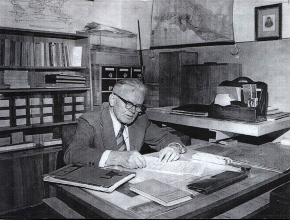
Федор Яковлевич Гаврилюк за своим рабочим столом в кабинете заведующего кафедрой почвоведения и агрохимии
За заслуги перед наукой и высшей школой Ф.Я.Гаврилюку было присвоено звание Заслуженного деятеля науки России, он был награжден Серебрянной медалью ВДНХ, медалями имени И.В.Мичурина и В.В.Докучаева.
С мая 1987 года и по июнь 1995 года заведующим кафедрой почвоведения и агрохимии был видный ученый и организатор науки Северокавказского региона профессор Павел Александрович Садименко.
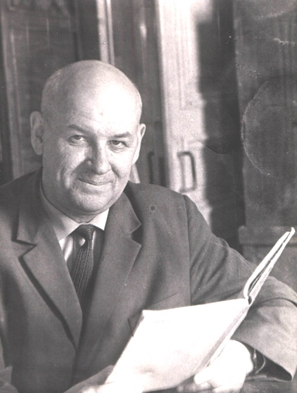
Павел Александрович Садименко – ученый, педагог и организатор науки Северокавказского региона
П.А. Садименко родился 10 июля 1919 года в Ростове-на-Дону. Здесь же, окончив с медалью среднюю школу, в 1937 году поступил на почвенное отделение геолого-почвенного факультета Ростовского университета. Он слушал лекции профессора С.А. Захарова, выполнял курсовые работы и проходил практику по полевому исследованию и картированию почв под его руководством. Именно поэтому Павел Александрович всегда относил себя к большой и широко известной школе профессора С.А. Захарова.
Вернувшись с фронта, П.А. Садименко стал директором Ботанического сада Ростовского государственного университета, в эти годы были заложены прекрасные ботанические коллекции, проведено исследование почвенного покрова, составлена подробная почвенная карта Ботанического сада. Но его всегда интересовала научная работа, поэтому он поступил в аспирантуру к профессору В.В. Акимцеву. И около 50 лет научная и педагогическая деятельность Павла Александровича была связана с кафедрой почвоведения и агрохимии.
Здесь он прошел путь от ассистента до профессора (1978). При этом проявил себя прекрасным лектором и организатором науки и учебной работы. С 1967 по 1973 гг. Павел Александрович был деканом биолого-почвенного факультета, с 1973 по 1987 гг. он параллельно с преподавательской работой на кафедре, выполнял обязанности заместителя председателя Северокавказского научного центра высшей школы (СКНЦ ВШ).
Научная деятельность проф. П.А. Садименко была связана с решением ряда теоретических и прикладных проблем общего и мелиоративного почвоведения. В 1953 году он защитил кандидатскую диссертацию на тему: «Почвы зоны самотечного орошения Пролетарского массива Ростовской области». На протяжении длительного времени Павел Александрович работал в тесном контакте с институтами мелиоративного профиля – «Южгипроводхоз» и «ЮжНИИГиМ». Это позволило сделать обобщение разностороннего и противоречивого материала, и представить его в виде докторской диссертации «Почвы юго-восточных районов Ростовской области и иx мелиоративная характеристика», которую он защитил в 1975 году. Монография по этой тематике была опубликована им ранее (1966).
Второе научное направление П.А. Садименко – изучение микроэлементного состава почв Ростовской области. При непосредственном участии и поддержке Павла Александровича для этих целей на кафедре было создано научное подразделение – лаборатория спектрального анализа, впоследствии ставшая межфакультетским подразделением. На этой базе были проведены большие работы. Результаты исследований докладывались на всесоюзных и региональных совещаниях, обобщались в отдельных монографических изданиях и статьях. Работа в этом направлении на кафедре продолжается и в настоящее время.
Заслуги П.А. Садименко были отмечены десятью правительственными наградами, а за многолетний труд по организации научных исследований на Северном Кавказе он был награжден орденом Дружбы народов (1981). Его исследования в области мелиорации были отмечены Золотой медалью ВДНХ (1977). В 1995 году П.А. Садименко получил звание Заслуженного профессора Ростовского госуниверситета.
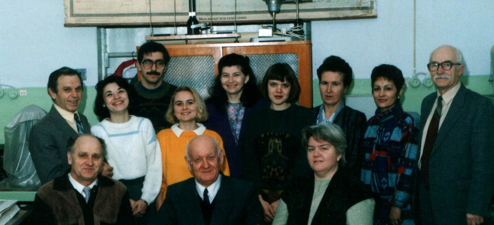
Фотография на память 23 февраля 1995 г.: (слева направо первый ряд) доцент Д.Н. Сулима, зав. кафедрой профессор П.А. Садименко, ст. инженер Н.Н. Мешкова; (второй ряд) доцент В.С. Крыщенко, лаборант Е. Булах, ассистент И.В. Морозов, лаборант О. Майгур, зав. лабораторией Т.В. Савченко, лаборант И. Разинкова, доцент В.Д. Коваленко, доцент Е.Л. Игнатенко, доцент Г.Г. Клименко
РАЗВИТИЕ КАФЕДРЫ НА СОВРЕМЕННОМ ЭТАПЕ
С 1995 года по 2015 год кафедрой руководил профессор Владимир Стефанович Крыщенко.
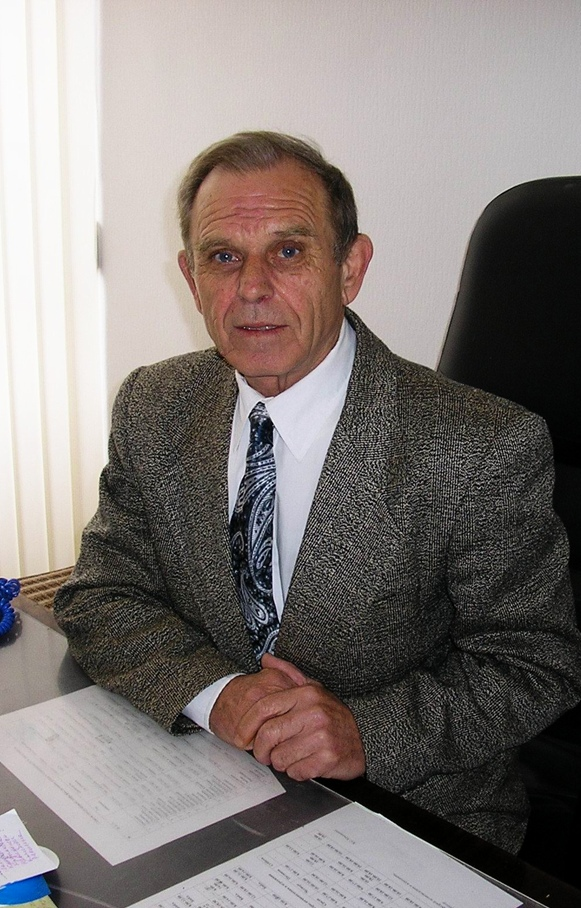
В.С. Крыщенко
Выпускник кафедры 1970 года, В.С. Крыщенко до поступления в Ростовский государственный университет, работая агрономом, заочно закончил Донецкий сельскохозяйственный техникум. Учеба в аспирантуре Ростовского госуниверситета (руководители Ф.Я. Гаврилюк, Г.Г. Клименко) успешно завершилась защитой кандидатской диссертации на тему «Минералогическая и микроморфологическая характеристика черноземов Ростовской области» (1974), и с этого времени он, постепенно пройдя все этапы педагогической карьеры от ассистента до профессора (1994), работает на кафедре. В 1991 году в НИИ Почвоведения и агрохимии СО АН СССР защищена докторская диссертация на тему «Общий принцип заполнения типами и подтипами почв единицы высоты».
Научные интересы проявляются в трех направлениях: минералогия почв, структурная организация почвенного покрова, изучение взаимосвязи минерального и органического вещества почв. Под его руководством разрабатывается проблема структурной организации полидисперсной системы почв и почвенного покрова с целью выявления и математического моделирования их матричных свойств. Ведется работа по созданию компьютерного банка данных по свойствам почв на гранулометрической матрице, причем под руководством профессора В.С. Крыщенко объединены в этом направлении усилия ученых Ростовской и Волгоградской областей, Ставропольского края, Дагестана.
Годы руководства кафедрой В.С. Крыщенко, в силу объективных обстоятельств, стали переломными для коллектива. Политические и экономические перемены в стране, смена формы собственности на землю, не могли не сказаться на тех задачах, которые приходится решать кафедре при подготовке молодых специалистов.
С 2015 года по настоящее время кафедрой руководит профессор Татьяна Михайловна Минкина
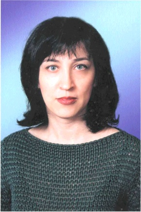
Т.М. Минкина
Профессор Татьяна Михайловна Минкина окончила кафедру почвоведения и агрохимии РГУ в 1988 г. и под руководством профессора П.А. Садименко защитила в 1992 г. в МГУ кандидатскую диссертацию на тему "Фосфатный режим мелиорируемых солонцовых почв". На преподавательской работе с 1991 г. Читала курсы «Химия почв», «Физико-химический анализ почв», спецкурсы. В настоящее время Татьяна Михайловна находится в отпуске по уходу за ребенком, поэтому не ведет аудиторных занятий, однако продолжает научные исследования, руководит работой аспирантов. При ее консультировании защищены две кандидатские диссертации. Научные интересы связаны с проблемами техногенного загрязнения агроландшафтов.
Т.М. Минкина занимается исследованиями механизмов поглощения тяжёлых металлов почвой и растениями, разработкой эффективных приемов ремедиации почв, загрязненных тяжелыми металлами. Установленные закономерности, определяющие поведение тяжелых металлов в системе почва – растение, позволяют использовать полученные данные для детоксикации загрязненных почв и построения прогностических моделей загрязнения. Определены также показатели состояния тяжелых металлов в почве для индикации характера ее загрязнения.
Татьяна Михайловна активно представляет кафедру на международных конференциях различного уровня. Летом 2006 года она принимала участие в работе XVIII Международного Конгресса почвоведов в Филадельфии, а до этого были XV и XVI Международные конгрессы почвоведов в Акапулько и Монпелье, Международные конференции в Вене и Москве.
Список
сотрудников кафедры почвоведения и агрохимии Ростовского
государственного университета с 1935 по 2022 гг.
Заведующие кафедрой
Захаров Сергей Александрович (1878—1949) – организатор школы, кафедры и её заведующий с 1935 по 1949 гг.
Гаврилюк Фёдор Яковлевич (1907—1997) – зав. кафедрой с 1949 по 1951 гг.
Акимцев Василько Васильевич (1893—1967) – зав. кафедрой с 1951 по 1967 гг.
Гаврилюк Фёдор Яковлевич (1907—1997) – зав. кафедрой с 1967 по 1987 гг.
Садименко Павел Александрович (1919—1998) – зав. кафедрой с 1987 по 1995 гг.
Крыщенко Владимир Стефанович (1942) – зав. кафедрой с 1995 г. по 2015 гг.
Минкина Татьяна Михайловна ()– зав. кафедрой с 2015 г. по настоящее время.